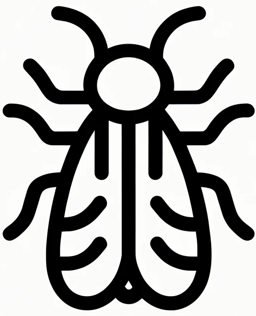

    <!-- Popup chat window -->

    <!-- chat open -->
    <div class="chat-bar-open" id="chat-open">
        <button
          id="chat-open-button"
          type="button"
          class="collapsible close"
  
        >
          
        </button>
      </div>
  
      <!-- chat close -->
      <div class="chat-bar-close" id="chat-close">
        <button
          id="chat-close-button"
          type="button"
          class="collapsible close"
  
        >
          <i class="material-icons-outlined"> X </i>
        </button>
      </div>
  
      <!-- chat chat-window 2 -->
      <div class="chat-window2" id="chat-window2">
        <div class="message-box" id="messageBox">
          <!-- <div class="first-chat">
            <p>Start by asking for papers on a neuron.</p>
            <div class="arrow"></div>
          </div> -->
          <div class="second-chat">
            <div class="circle"></div>
            <p>Start by asking for papers on a neuron.</p>
            <div class="arrow"></div>
          </div>
        </div>
        <div class="input-box">
          <div class="write-reply">
            <input
              class="inputText"
              type="text"
              id="textInput"
              placeholder="Write a reply..."
            />
          </div>
          <div class="send-button">
            <button
              type="submit"
              class="send-message"
              id="send2"
            >
              <i class="material-icons-outlined"> send </i>
            </button>
          </div>
        </div>
      </div>